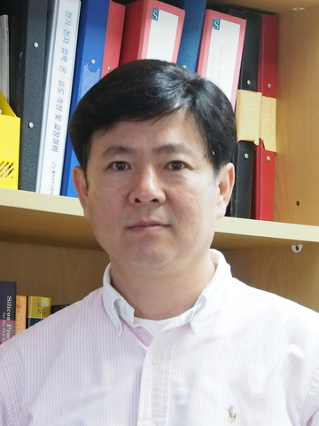

|
PROFESSOR : YUNCHUL CHUNG

Education
Ph.D : 1990-1995, Physics, Korea University
M.S. : 1988-1990, Physics, Korea University
B.S. : 1984-1988, Physics, Korea University
Career
Research Associate, Oxford University, 1996-2000
Visiting Scientist, Weizmann Institute of Science, 2000-2003
Assistant Professor, Pusan National University, 2003-2008
Associate Professor, Pusan National University, 2003-present
Contacts
email : ycchung + suffix
Home Page : http://meso.phys.pusan.ac.kr
Office Phone : +82-51-510-2729
| Address : |
Department of Physics
Pusan National University
Busan, 609-735, Republic of Korea
|
suffix for the email is @pusan.ac.kr
PH.D. STUDENT
Hwanchul Jung
Phone : 051-510-3954
email : azurine91 + gmail
M.S. & Ph.D integrated : 2017- , Physics, Pusan National University
B.S. : 2010-2017, Physics, Pusan National University
Master STUDENT
 Hyun Seonwoo
Hyun Seonwoo
email : + gmail
|
|
COLLABORATORS
Division of Convergence Technology
Korea Research Institute of standard and science
Braun Center for Submicron Research
Weizmann Institue of Science
AVAILABLE POSITIONS
|
|
The position for Master course students is open.
Please contact us by email.
|
|
|
The position for undergraduate students who want to conduct a small project
in the lab is open for all year around.
|
|